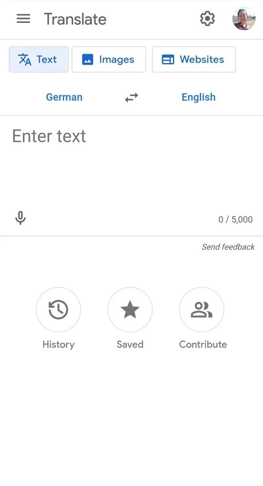
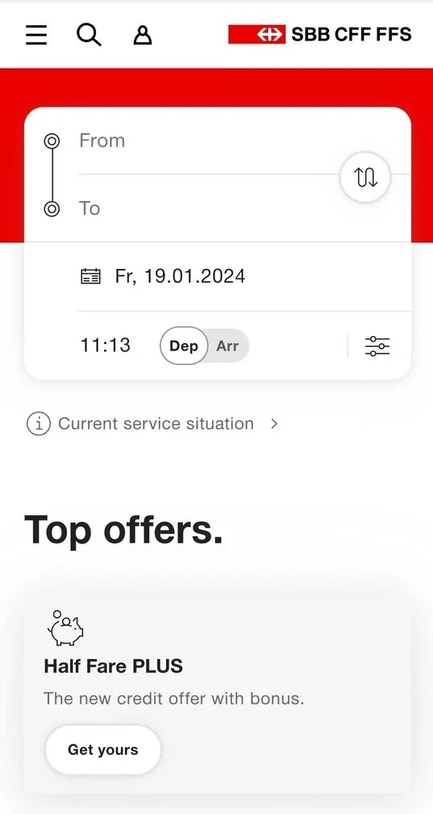
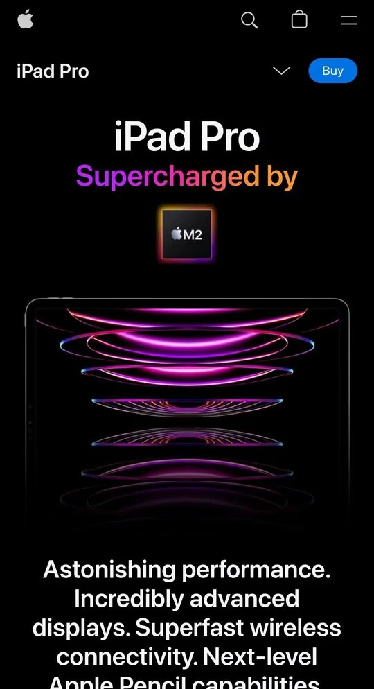

Hick's Law
Google Translate
Google Translate is an excellent example of applying Hick's Law. When users visit the Google Translate website, they are presented with a simple and clear interface. The main action of entering a text for translation is placed in the center. The design is minimalist and the user is guided through the translation process with a a focused interaction.
Fitt's Law
SBB Swiss Federal Railways
In the context of the SBB's website, the Fitt's law can be observed in the placement and the size of the most frequently used features, such as the search bar to find train schedules. By making this element larger and easily reachable, the user can quickly access the information needed.
PARC: Contrast
Apple
Apple's iPad Pro product pages exemplify the principle of contrast to catch the user attention. Apple uses bold and larger fonts for key headlines to make the essential information stands out. The contrast in color, the high quality images and the minimalist backgrounds create a visual contrast that showcase the device sleek design.